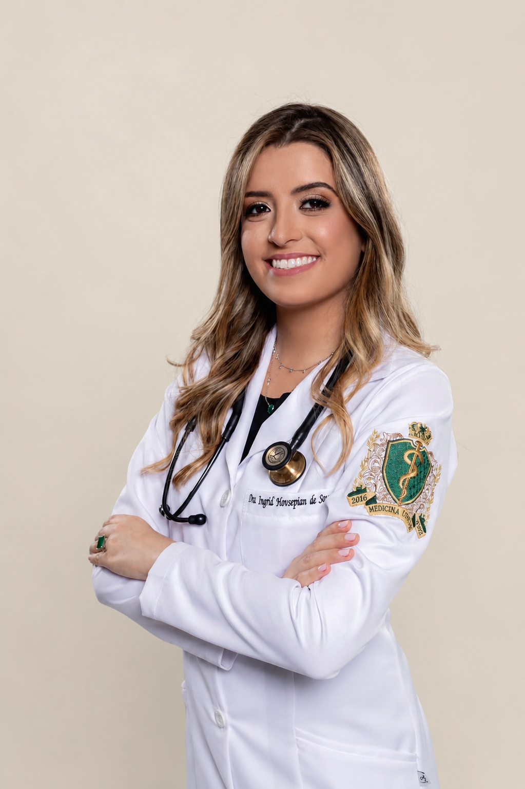
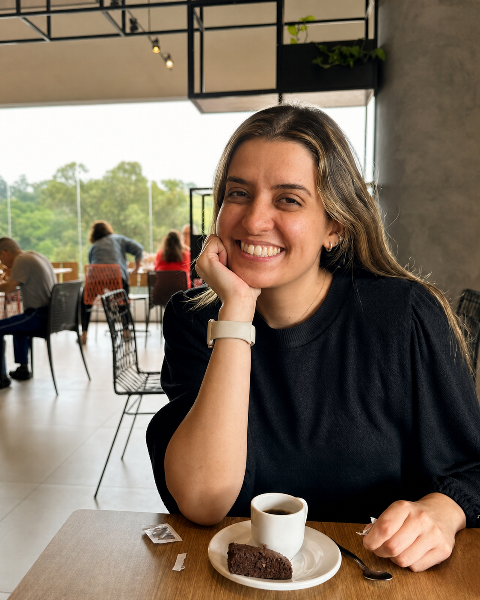

O cérebro é complexo.
Falar sobre ele
não precisa ser.
Um espaço com conteúdos sobre neurologia, explicados com clareza e baseados em ciência.
Prazer, Ingrid →

Prazer,
eu sou a Ingrid.
Sou médica e, atualmente, residente de Neurologia, uma área que tem despertado cada vez mais a minha curiosidade sobre o cérebro, seu funcionamento e tudo aquilo que podemos fazer para cuidar dele ao longo da vida.
Também sou pós-graduada em Medicina do Trabalho e em Medicina Legal e Perícias Médicas, formações que me ensinaram a olhar para a saúde de uma maneira mais ampla: rotina, hábitos, ambiente de trabalho e qualidade de vida.
Sempre gostei de falar sobre prevenção e construção de bons hábitos. Atividade física, alimentação, sono, organização da rotina, saúde mental e acompanhamento médico fazem parte desse cuidado que começa nas pequenas escolhas.
Por aqui, quero compartilhar medicina, residência, estudos, treinos, rotina e os bastidores de quem também está tentando construir uma vida mais saudável e equilibrada.